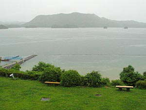

|
唐津に向かう幹線道路沿いに久里双水古墳はあった。小型の若草山のような芝山の前に、茅葺きの石室レプリカ展示室が馬小屋のように建っている。古墳時代初頭の百メ−トル級の前方後円墳で、魏志倭人伝に記されている末盧国の首長の墓ではないか？竪穴式石室—砂岩、玄武岩の石板と粘土を交互に積み上げた石室の中に、珍しい舟形木棺で納められたいた可能性もある由。壁には赤味を帯びた顔料が塗布。中から盤龍鏡、管玉、刀子が見つかっている。このあと傘をさしながら本物前方後円墳の山に登る。川が大きく蛇行し見晴らしのよい小高い所。発見は昭和55年、市の史跡指定は昭和63年、平成に入りファイバ−スコ−プによる内部調査が行われ、新しく公園として整備中とのこと。脇の街道は麦秋、黄金の波。
もう海かと思える松浦川を渡り、唐津城を右手に鎮西名護屋城へ。乗った、乗った、半島をぐるりと周って海岸に出そうで出ない。海岸に出たところが呼子。それでもまだ入り組んだ海岸線に出たり、海から離れたり、最後に名護屋大橋を渡りやっと秀吉の世界へ。雨が本降りの中先ず県立名護屋城博物館へ。学芸員さんの解説を聞く。名護屋城跡の広大な遺跡を保存整備するとともに、日本と朝鮮半島との交流の歴史紹介をメインとしているとのこと。
四百年前、朝鮮半島侵略のため出兵の基地として名護屋城を築き、周囲半径三キロメ−トル圏内に百三十ヶ所に及ぶ大名陣屋が集結。それまで小さな漁村だったこの地が、築城から約半年で十万人以上の大名、将兵、商人が活動して軍事景気に沸く一大都市となり、最盛期の人口は数十万人とも。悲惨な戦況と食糧難に苦しむ将兵とは反対に、基地名護屋城では秀吉の趣向で茶の湯、能など優雅三昧の暮しだったらしい。しかし、千五百九十八年秀吉が亡くなると日本軍は撤退、大名達も領国に引き揚げ、七年という短い繁栄は夢のように消えて行く。その後人為的に石垣が取り壊された所もあるが、安土桃山時代の貴重な石垣,、石段、本丸跡、大手門等往時の規模がわかる良好な状態で保存されている。
館内展示は、①名護屋城築城以前、原始から朝鮮半島との交流により日本文化に多大な影響を与えた資料展示,解説 ②名護屋城時代（文禄、慶長の役）の日本、朝鮮双方の立場からの戦争、また当時の城下町の暮しの様子展示 ③江戸時代の朝鮮通信使以後現代までの相互の関わり ④特別史跡名護屋城並びに陣屋、桃山時代城郭中最大級の発掘成果、出土品の数々である。もっと時間たっぷり見学したかった。城跡も東出丸から各大名陣地を雨の中遥かに眺望するのみで、本丸跡の見学は残念ながら割愛。スケ−ルが大きいだけに半日は必要。急ぎ足の見学ではあったがさすがに現地での一見は凄い。素晴らしい立派な遺跡であると同時に、この時代は太古の昔から続いていた双方の民同志の友好関係が断絶した証しでもある。それは十六世紀末だけでなくついこの間にもそのような不幸な時代があったことを想起させる。「不幸な戦争の意味を知り、将来の交流・友好の指針を見出す」とは簡単にいうけれど、朝鮮半島のことのみならず、戦争の二十世紀が終わり平和な二十一世紀かと期待すれば、また世界は憎悪の戦い…。平和を望まない者はいないのにその平和のために争いを繰り返す…。人間とは……。歴史から今を学び生かしたいのだけれど、重い鉢が被さるばかりで解決の糸口さえ探し当てられない。
東松浦半島の突端から西回りに下り、満悦？温泉「いろは島」館へ。これまた尾根に登ったり、海岸線を走ったり、なんだかぐるっと回って宿に着いた感じ。目の前は海。広くないロビ−は呼子からの魚介、野菜市。少々年輩のご婦人方が荷の近くでお喋り、のんびりしたバザ−。
国民宿舎は大入り満員。食堂は大賑わい、海の幸一杯和気藹藹の雰囲気。前二泊は和風旅館だったけれど、ここは気楽なファミリ−レストラン。最後の夜とあってアルコ−ルが進んだのか殿方連ご飯が進まない。お櫃を部屋に持っていっていいかと聞けば快諾。そうなったら女の出番。売店でゆかりとあかめの振りかけを買って、お部屋で炊き出しならぬお握りニギニギ。結局それは夜食でなく四日目のランチになったわけだけど、なんだか楽しいおままごとの一時であった。夕食後一室に集い四方山話。眠たくもあり眠たくもなし、結構夜が更けるまで話してた気がするけれど、どんなことを何時まで話していたかはもう夢ん中、覚えていない。 （続く）
Typed
by ODA
|
|
|
|
佐賀県立名護屋城博物館
で見る名護屋城の模型 |
|
| 雨の中の名護屋城大手口 |
|  |
| いろは島温泉の国民宿舎からの眺め |
|